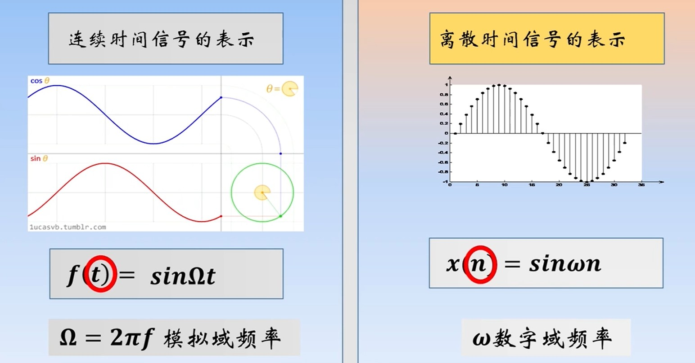
驱动的变量为次数n，而非时间。
集合表示
- n=0的样本：添加下划线
- 样本按照顺序排列
公式
图像
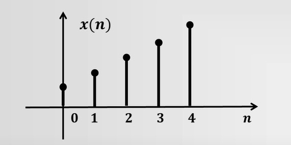
单位脉冲序列
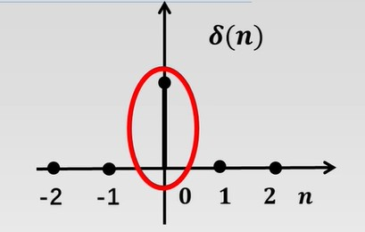
所有的数字信号，都能通过单位脉冲的缩放，偏移，叠加得到。
单位阶跃序列
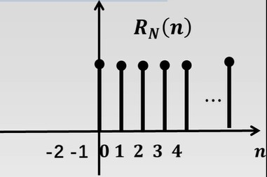
**单位矩形序列
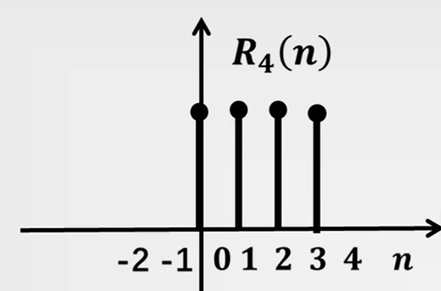
实指数序列
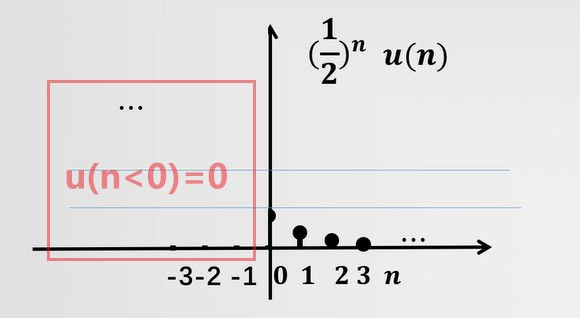
如图，左边全为0，右边有值的序列又称之为：单边序列。
复指数序列
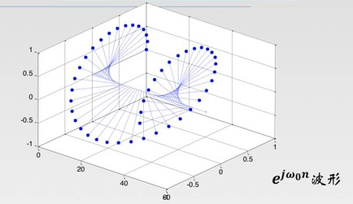
正弦
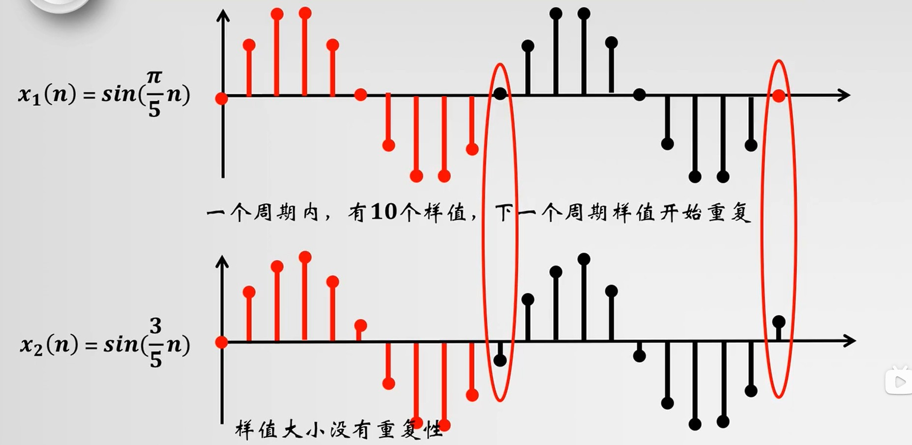
正弦的离散采样值，不一定是周期循环的。
周期序列
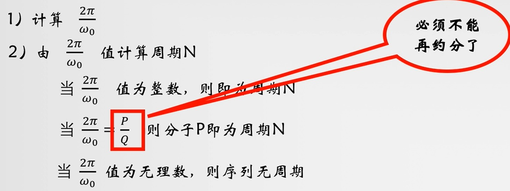
当多个正弦叠加时，周期为所有正弦信号的公倍数。
加减乘除
n对齐后，直接各个对应采样值进行加减乘除
位移，翻转
位移：x(n-N)，左加右减
翻转：x(-n)
尺度变换
:序列x(n)每间隔a个点取一个点，构成一个新的序列。
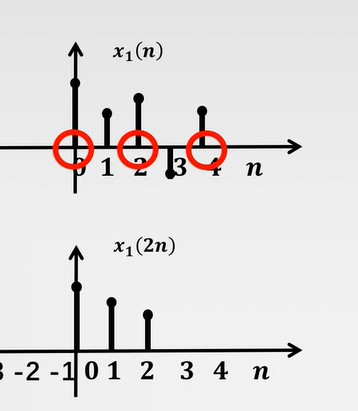
加减，乘除，倍增
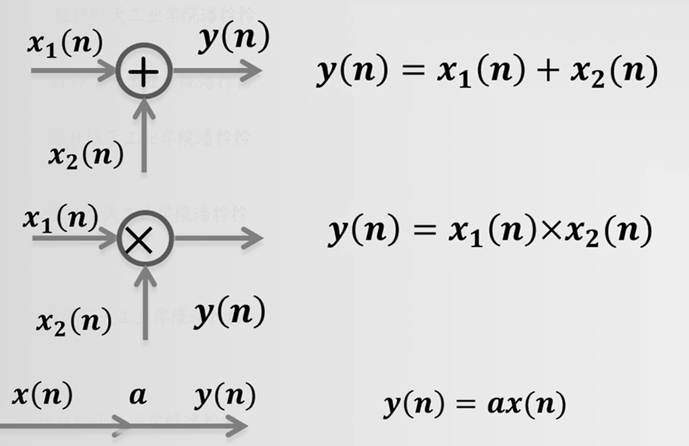
函数
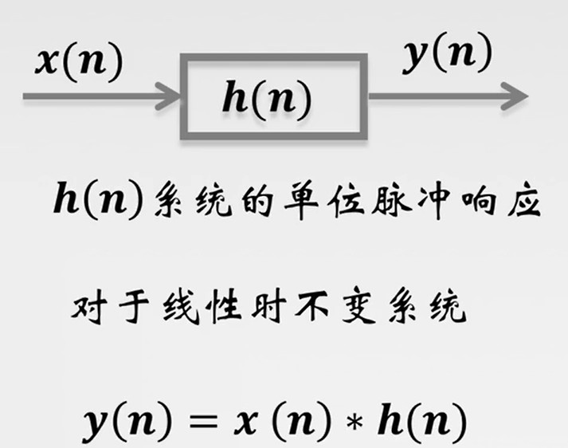
同时满足上述的2.2和2.3的系统。
系统输入时，系统输出就是单位脉冲响应。
对于 线性时不变系统 系统的输出可以通过 单位脉冲响应和系统输入卷积计算得到。
- 交换律：a * b = b * a
- 结合律：(a * b) * c = a * (b * c)
- 分配律：a * (b + c) = a*b + a * c